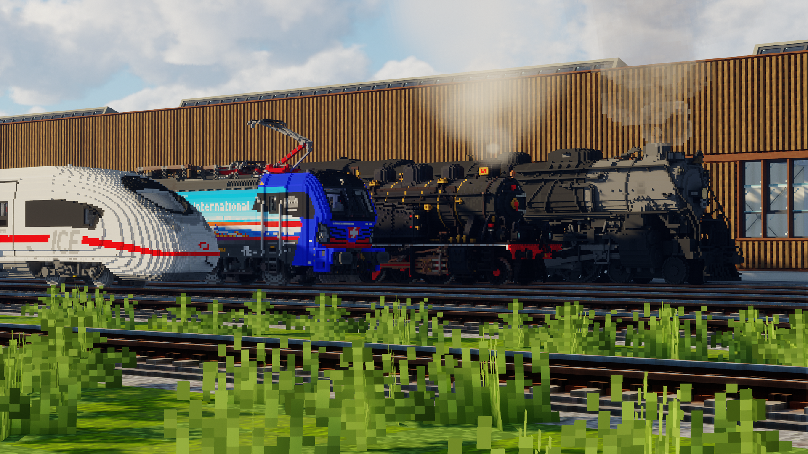

Modélisation
3D
Dans ces pages, découvrez mes différentes réalisations, regroupées au fil de mes projets et de mes expérimentations !
Les modèles
Index
01Voxel
Des trains français reconstruits cube après cube : un autorail et des locomotives pour un pack Minecraft, puis un locotracteur repris en 2026.
Voir les modèles →
Technique à venir
Prochain volume
Cette place attend son modèle.
Dernière mise à jour : 21 septembre 2026